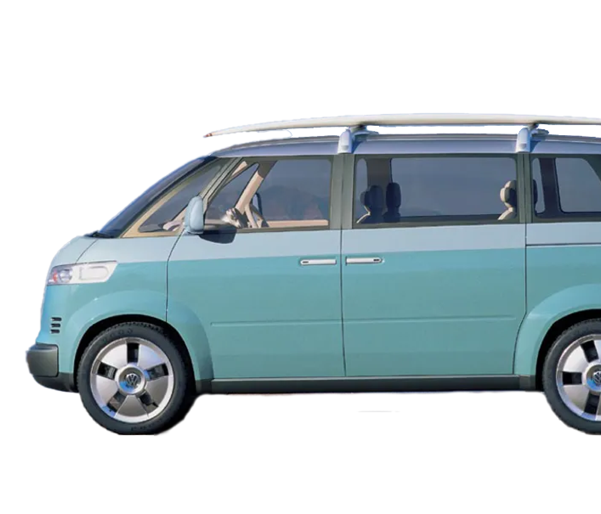
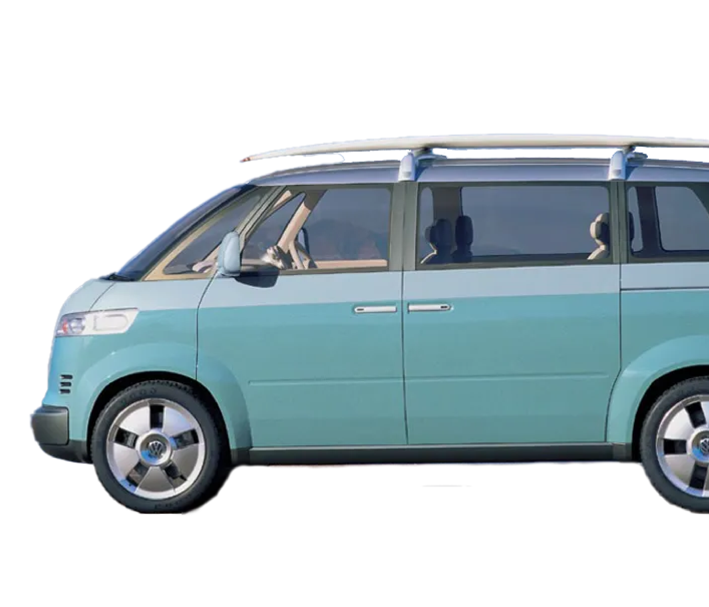
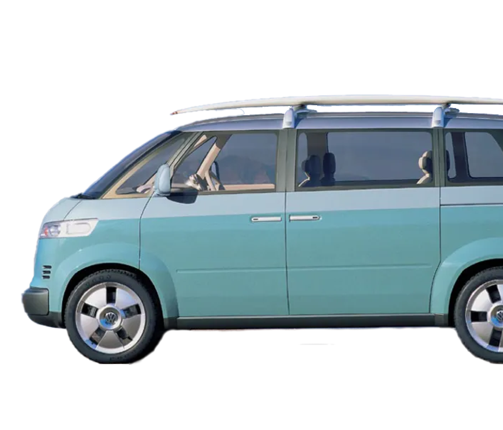
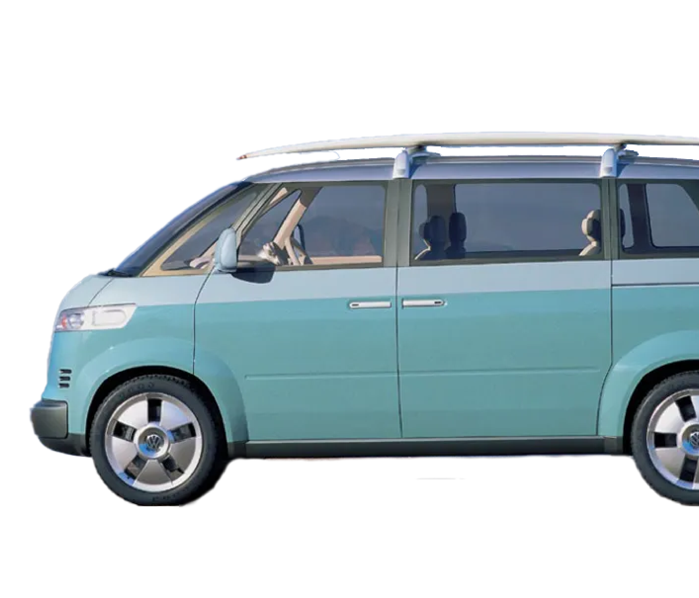

In 2001, a Volkswagen Microbus Concept was created, with design cues from the T1 generation in a spirit similar to the New Beetle nostalgia movement. Volkswagen planned to start selling it in the United States market in 2007, but it was scrapped in May 2004 and replaced with a more cost-effective design to be sold worldwide.